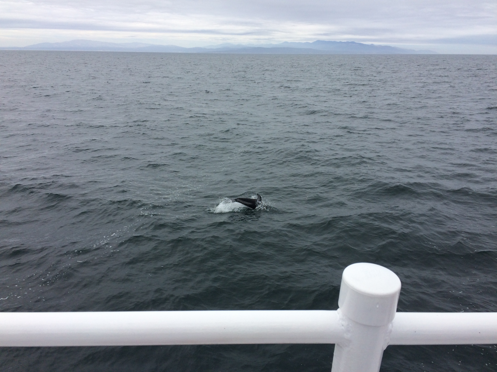

Nice click! This is me!
Background
Medical School: I chose to study medicine at University as I enjoyed applying science to real-life problems and wanted to help other people. I decided to leave the course, graduating with a 2.1 in Medical Studies, as I decided I did not want to pursue becoming a doctor.
Technology: I worked as a District Nurse Administrator and found I was interested in the IT aspect of this role, such as how patient data was stored. I worked as a data administrator at The University of West of England (UWE) which I enjoyed, I then worked as a Data Administrator at a Student Accomadation Company where I aided in the testing of a new website. I got to work with software developers here and was intrigued by the code. After doing some research and online coding courses I decided to enter the _nology course.
Background

Bristol
I grew up in Bristol, I studied sciences at A-Level and was interested in science technology.
Medical School
I chose to study medicine at University as I enjoyed applying science to real-life problems and wanted to help other people. I decided to leave the course, graduating with a 2.1 in Medical Studies, as I decided I did not want to pursue becoming a doctor.
Technology
I worked as a District Nurse Administrator and found I was interested in the IT aspect of this role, such as how patient data was stored. I worked as a data administrator at The University of West of England (UWE) which I enjoyed, I then worked as a Data Administrator at a Student Accomadation Company where I aided in the testing of a new website. I got to work with software developers here and was intrigued by the code. After doing some research and online coding courses I decided to enter the _nology course.
Interests
-
Travel
I have travelled mainly in Europe, but visited a friend in California, this photo was in Yosemite, and went to Tanzania for my medical elective.
-

Animals
I managed to see Killer Whales while in California as well as dolphins, sea-lions and black bears!
-
Sport
I enjoy tennis, swimming, netball, hiking, and running - this is me completing the Portsmouth 10 mile run!
-
Art
I like art such as watercolour painting. I also enjoy baking!
Course Aims
1) Learn and understand as much new coding content as possible!
2) Develop my real-life professional skills, such as presentation, so I am ready for a role as a junior software developer.
3) Build a successful client project and be able to build my own beautiful and efficient projects - (in healthcare, green technology or another area).
4) Build a tech community and meet new people with similar interests.
5) Get my first job as a junior software developer after the course!
Get In Touch
Thank you for looking at my website .